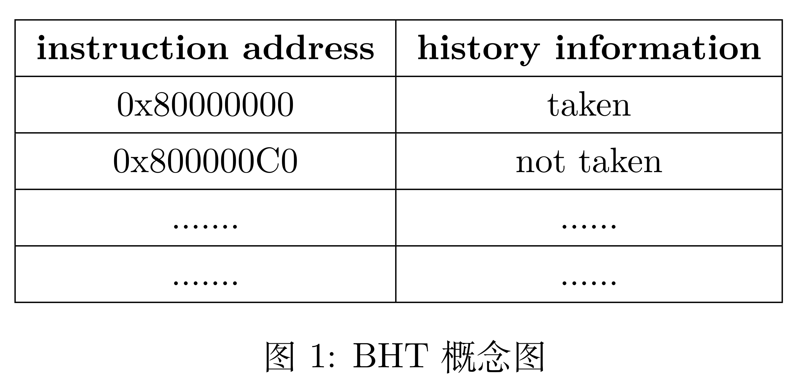
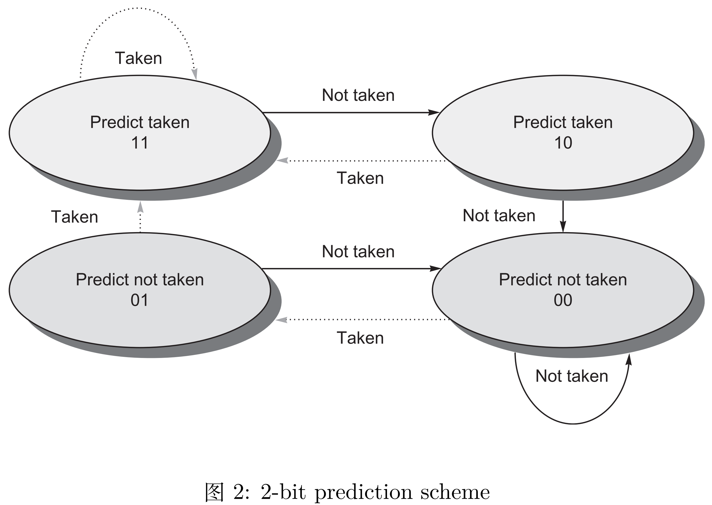
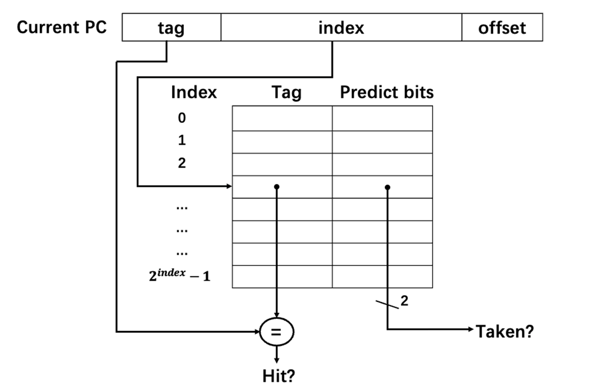
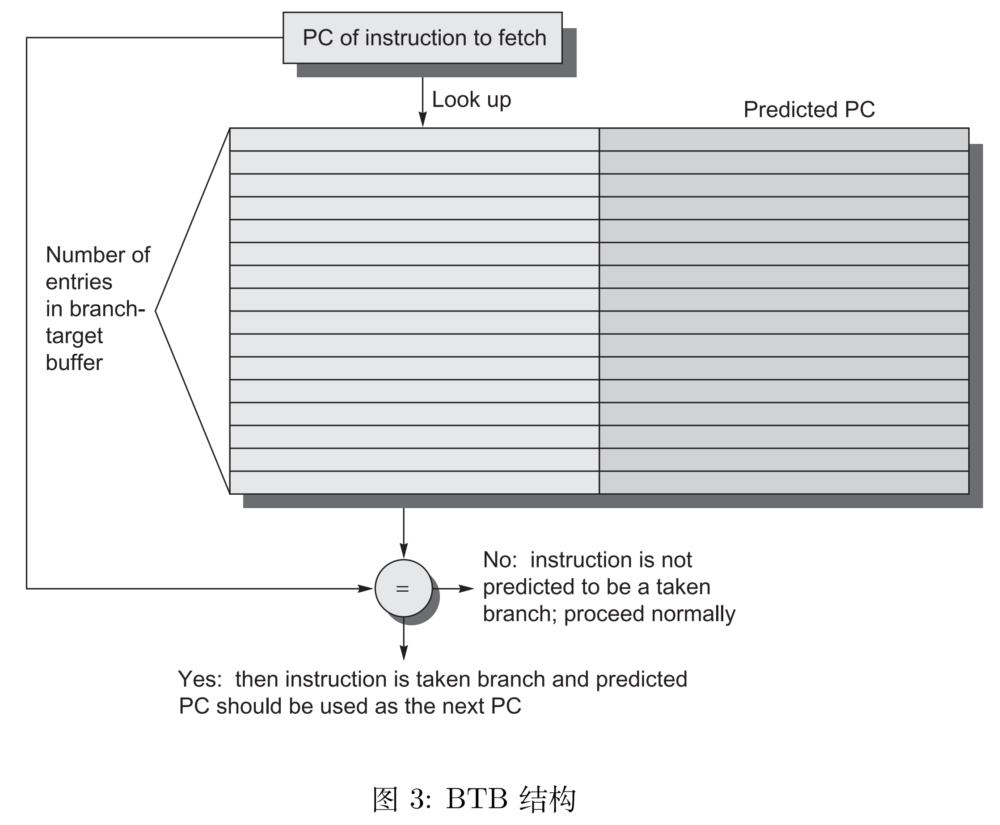
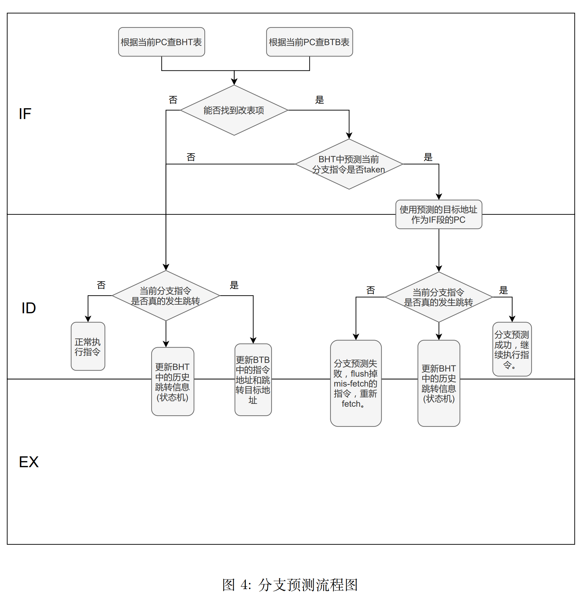

实验1 - 动态分支预测
实验目的
-
了解分支预测原理
-
实现以 BHT 和 BTB 为基础的动态分支预测
实验环境
- HDL：Verilog
- IDE：Vivado
- 开发板：NEXYS A7 (XC7A100T-1CSG324C)
实验原理
动态分支预测
动态分支预测利用了运行时以往是否发生跳转的信息对未来的分支跳转进行预测。它会比 predict not taken 这样简单的静态分支预测要更加高效，准确率更高。本次实验需要大家实现 BHT 和 BTB 相结合的动态分支预测技术。
BHT
branch-history table(BHT)，又名 branch-prediction buffer，它是一小块包含了跳转地址和历史跳转信息的 buffer。我们在遇到跳转指令的时候，通过对比之前保存在 buffer 中的跳转地址和相应的跳转信息来决定当前这条跳转指令是否应该发生跳转。buffer 基本信息如图1所示。

BHT 的跳转地址可以是完整的指令地址，也可以是 PC 的低地址部分 (也就是相当于做了一个 hash)。历史信息最简单的形式是用 1-bit 来表示当前分支跳转指令之前有没有发生跳转，如果历史分支跳转是 taken 的话，那么当前的分支跳转指令也选择跳转。反之，亦然。当然，我们没有办法保证每次的分支预测都是正确的，如果遇到分支预测错误，需要重新 fetch 后面的指令，并修改 BHT 中的历史跳转信息。
本次实验我们会使用 2-bit 来表示历史跳转信息，从而提高预测的准确性。2-bit 的预测策略可以用一个状态机来表示，不过需要注意的是，这个状态机是保存在 BHT 中的每个表项中的，也就是说每一条分支跳转指令都会有一个 2-bit 的状态机来表示历史跳转信息。状态机如图2所示。

BHT 的数据结构有多种实现方式，包括链表，队列，哈希表等，大家选择自己喜欢的方式实现即可。

BTB
看了 BHT 的基本介绍，大家可能会疑惑 BHT 中预测分支跳转是 taken 的情况下如何拿到跳转的目标 PC，BTB 就是来解决这一问题的。

branch-target buffer(BTB)，也叫 branch-target cache，用来保存预测的分支跳转目标地址。与 BHT 相结合，如果预测当前分支发生跳转，就根据当前的分支跳转指令的 PC，从 BTB 里拿到对应的目标跳转地址作为下一条指令地址。其基本结构就是一张 look-up table， 如图3所示。可以看到，表的左边记录的是访问过的分支指令的 PC，表的右边记录的是分支指令的目标地址。每次 BHT 预测当前分支是 taken 的情况下，通过查 BTB 来获取分支指令跳转的目标地址，从而不会形成任何的 stall 或者 flush。在更新 BTB 所维护的表的时候，要 注意每次记录的是 taken 的分支指令及对应的跳转目标地址，如果分支指令不 taken，也不需要记录，指令按顺序 fetch 下一条指令即可。
在 5 段流水线中使用 BHT 和 BTB 进行分支预测的流程如图4所示。（本流程适用于跳转指令在ID阶段即发生跳转的情况，即在ID阶段可以修正预测错误，请同学们根据自己的cpu自行设计，不必完全按照此流程图）

实验要求
- 在给定框架或 lab0 的基础上实现用 BTB 和 BHT 做动态分支预测
- 通过仿真测试和上板验证
- 验收要求指出使用了 BTB 和 BHT 的跳转指令位置，展示 PC 的变化和BHT状态变化
实验步骤
- 在给定框架或 lab0 的基础上，在 5 段流水线内增加 BTB 和 BHT。
- 若在lab0的基础上实现分支预测，无需安装串口软件，分析系统2-lab2实验中的跳转状态变化，验收时会详细提问。
- 通过仿真测试和上板验证
使用新框架注意事项
- 本次实验提供新的工程目录，请将src/lab1/lab1.zip解压，在其中完成Branch_Prediction模块。原文件中可能存在多余文件，请同学们将和RV32core接口一致的top文件在综合时设置为优先级最高。
- 测试程序的源码见 src/lab1/ref/src/sort.c，请阅读以明确程序的输出内容，反汇编代码见 ref/obj。仿真时的输入ram.hex和rom.hex位于 /lab1/lab1.sim/sim_1/behav/xsim/ 文件夹中。
- 一个好消息是，现在 NEXYS A7 可以通过串口在电脑上显示测试程序输出了
- 具体方法见补充说明.pdf
- 坏消息是现在支持显示的内容非常有限，只支持测试程序的结果输出
- 本次实验的测试程序是一个排序算法，所以运算量非常大，几乎不可能再像前两次实验那样单步调试。验收会检查排序结果，通过前述串口在电脑显示。若结果不正确请不要慌张，可以试试下面的几个方法：
- 首先请确保仿真的结果正确，仿真时会在 Tcl Console 显示程序的输出。因为测试比较复杂，需要多跑一段时间才能得到结果。你可以参考补充说明.pdf，仿真直到结果输出完全，测试程序结束后会进入一个空循环。
- 可以先用前两次实验的测试程序检测你的实现，看基本功能是否正确
- 补充说明.pdf 简单介绍了测试程序输出的原理，或许对调试有帮助
- 上板运行时的引脚文件和之前的引脚文件不同，H17按钮可以用于控制程序运行。
思考题
- 在报告里分析分支预测成功和预测失败时的相关波形。
- 在正确实现 BTB 和 BHT 的情况下，有没有可能会出现 BHT 预测分支发生跳转，也就是 branch taken，但是 BTB 中查不到目标跳转地址，为什么？
- 前面介绍的 BHT 和 BTB 都是基于内容检索，即通过将当前 PC 和表中存储的 PC 比较来确定分支信息存储于哪一表项。这种设计很像一个全相联的 cache，硬件逻辑实际上会比较复杂，那么能否参考直接映射或组相联的 cache 来简化 BHT/BTB 的存储和检索逻辑？请简述你的思路。
注：思考题写入实验报告内